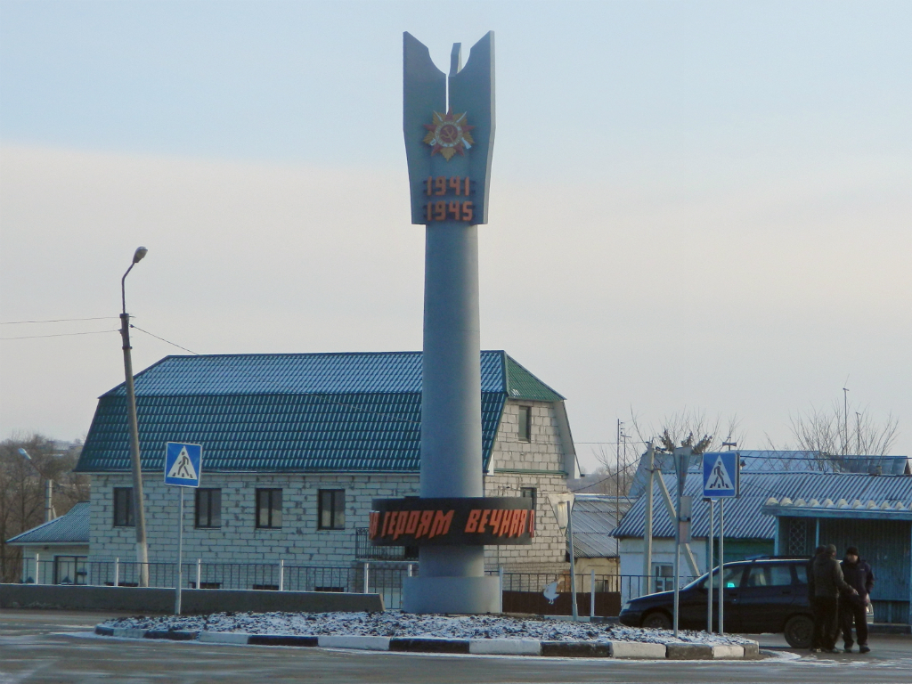
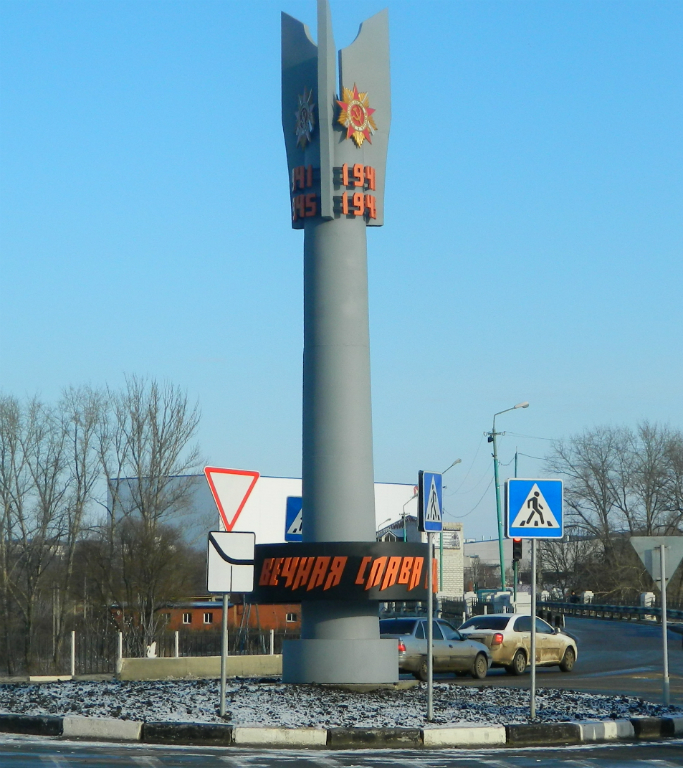

Места нашей области, посвящённые Великой Победе
 Домой
Домой
Стела в честь 70-летия Победы (Лебедянь)
Стела установлена в апреле 2015 года. Конструкция изготовлена коллективом ООО «ЛеМаЗа» и безвозмездно передана в дар городу. Заводские умельцы создали оригинальное произведение из шестимиллиметровой стали, а затем надёжно смонтировали его на бетонном основании, закрепив фланец стелы с помощью десятка анкерных болтов.
10-метровая металлическая стела представляет собой неразорвавшийся ракетный снаряд, вонзившийся в землю. По замыслу авторов он символизирует конец кровопролитной войны. Верхние три сектора стелы – ракеты с хвостовым оперением – украшают три ордена Отечественной войны, а внизу на кольце по кругу прикреплены отлитые из чугуна слова – «Вечная слава героям». Дизайнеры составили фразу так, что её смысл не меняется и не теряется, с какой бы точки окружности не начинать чтение. В тёмное время суток стелу подсвечивают прожекторы. Вокруг высажены цветы.
Изображения:
 